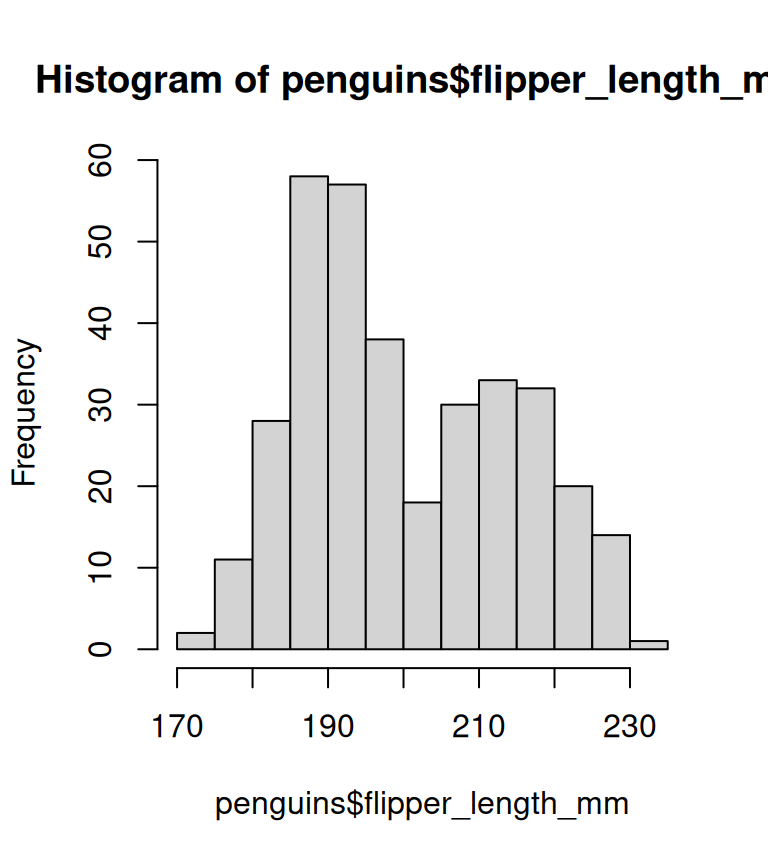
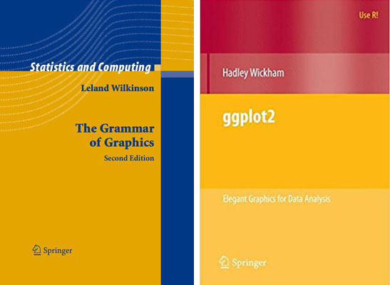
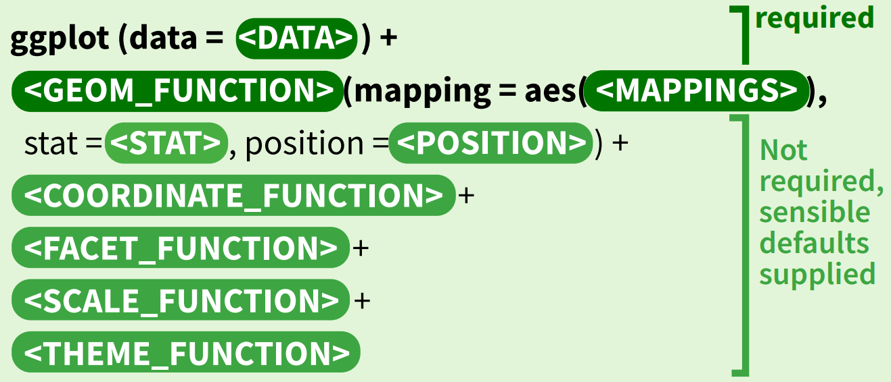

Visualize your data with ggplot
2025-09-18
Grammar Of Graphics


- Leland Wilkinson’s The Grammar of Graphics
- Created by Hadley Wickham in 2005
- Data: Input data.
Table, csv, xlsx - Aesthetic: Mapping or visual characteristics of the geometry.
Size, Color, Shapeetc - Geometries: A geometry representing data.
Points, Linesetc - Facets: Split plot into
subplot - Statistics: Statistical transformations.
Counts, Meansetc - Coordinates: Numeric system to determine position of geometry.
Cartesian, Polaretc - Scale: How visual characteristics are converted to display values
- Theme: controls points of display.
Font size, background colour
Building A Graph: • Syntax

Building A Graph


Building A Graph

Building A Graph

Data • format
- Transforming data into ‘long’ or ‘wide’ formats

Wide
# A tibble: 4 × 8
species island bill_length_mm bill_depth_mm flipper_length_mm body_mass_g
<fct> <fct> <dbl> <dbl> <int> <int>
1 Adelie Torgersen 39.1 18.7 181 3750
2 Adelie Torgersen 39.5 17.4 186 3800
3 Adelie Torgersen 40.3 18 195 3250
4 Adelie Torgersen NA NA NA NA
# ℹ 2 more variables: sex <fct>, year <int>Long
species island sex year variables value
1 Adelie Torgersen male 2007 bill_length_mm 39.1
2 Adelie Torgersen male 2007 bill_depth_mm 18.7
3 Adelie Torgersen male 2007 flipper_length_mm 181.0
4 Adelie Torgersen male 2007 body_mass_g 3750.0Geoms • types

Stats
Statscompute new variables from input data.Geomshave default stats.- Plots can be built with stats.

Facets • facet_wrap
Split to subplotsbased on variable(s),- Faceting in
one dimension